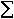
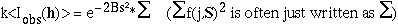
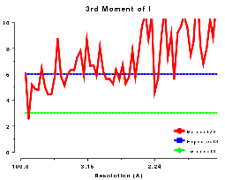

| Basic Maths for Protein Crystallographers |
| Intensity statistics |
A good deal can be inferred from the intensity statistics and relationships between them. Certainly they are an excellent way of assessing the quality of our experiment.
I(h) = F(h) F(h)* = |F(h)|2

If we make the assumption that the atomic positions xj, and therefore the interatomic vectors xj - xk in the unit cell are random, the mean value of <F(h) F(h)*> (S) = g(j,S)2, since the average of the second summation will then be zero. If the crystal has symmetry, even if the atomic positions are random in 3-D, they will not be completely random when viewed in projection along a symmetry axis; this is manifested in enhanced intensities of reflections on symmetry axes. The intensity I is corrected for this effect by dividing by a "symmetry factor" (ε), which depends on the Laue symmetry and the reflection indices, to give a "reduced intensity" I'.
If all atoms have the same temperature factor, i.e.
g(j,S) = f(j,S)e-2Bs²
then
<F(h)F(h)*> (S) = e-2Bs² f(j,S)2
Our measured I(h) will be on an arbitrary scale so we expect

and after dividing both sides by and taking natural logs:
ln K = ln{<I'obs(h)>/} = -2B s²
The Wilson Plot is simply the plot of ln{<I'obs(h)>/} and should be a straight line with gradient -2B. For proteins the low resolution data does not usually generate such a straight line. In fact the atoms are not distributed randomly within the crystal and the solvent regions are much less well-ordered than the protein. This generates a distribution of <I'obs(h)> of the type shown in Figures WL and WR. For data below 10Å <I'obs(h)> is large, but it dips at about 5Å. From about 4Å on the solvent contribution to the structure amplitude is very small, and we get a reasonably straight line corresponding to the scattering from the ordered atoms.
Plots on the left are for a data set in P212121 with translational NCS, plots on the right from a partially twinned data set in R3. These pictures each hide a larger (better resolution) picture, which will appear in a separate window upon clicking the small version.
| Figure WL | Figure WR |
| Figure AL | Figure AR |
| Figure FL | Figure FR |
Normalised intensities and amplitudes are generated by modifying I(h)
to give Z(h) and then defining E(h) as equal to sqrt(Z(h)).
The definition is that <Z(S)> = 1 for all resolution shells (S is defined as (d*)2, or  ), i.e. every intensity, I(h), is
divided by the symmetry factor and by <I'(S)> for that resolution range.
This takes account of the fact that for macromolecular structures the low resolution <I'> distribution is very different from the Wilson ideal. Ref
Figure of <I'(S)> v resolution..
), i.e. every intensity, I(h), is
divided by the symmetry factor and by <I'(S)> for that resolution range.
This takes account of the fact that for macromolecular structures the low resolution <I'> distribution is very different from the Wilson ideal. Ref
Figure of <I'(S)> v resolution..
Hence E(h) is equal to sqrt((I(h)/ε) / <I(S)/ε>); and <E2> = 1.
This approach was suggested by Karle; small molecule crystallographers often normalise their data by applying an overall temperature factor obtained from a Wilson plot.
The normalisation method is also described in the ECALC documentation:
The cumulative intensity distribution plots the percentage of acentric and centric reflections where (Z(h) is less than 0.1, 0.2, up to 1.0. For a crystal with more or less randomly distributed atoms this follows a predictable distribution, as can be seen by plotting the output of TRUNCATE or ECALC (see also Figure CL below). The distribution can be misleading if the data is of poor quality, or there is strong translational non-crystallographic symmetry, which may cause whole classes of reflections to be virtually unobserved.
For a twinned crystal where in fact each observed "I(h)" is the sum of two or more overlapping reflections, the distribution becomes rather sigmoidal; since it is unlikely that both contributions to I(h) will be weak, it appears that there are fewer weak intensities than expected (see Figure CR below).
Plots on the left are for a data set in P212121 with translational NCS, plots on the right from a partially twinned data set in R3. These pictures each hide a larger (better resolution) picture, which will appear in a separate window upon clicking the small version.
| Figure CL | Figure CR |
The moments of E and Z provide some of the most sensitive tests for both data quality and twinning. If these deviate in certain ways you probably have measured twinned data. If they fluctuate you may have made a mess of processing.
The definition of the k-th moment of a random variable x about its origin - also called the "raw moment" to distinguish it from the moment about the mean of x ("central moment") - is:
<xk> where < > denotes the mean value.
By using the structure factor formula (ref ??) the expected values for these moments can be calculated when k is a simple power, e.g.1, 2, 3, ..., and it can be shown that the k'th moment of E, which by definition is equal to the (k/2)'th moment of Z, is:
(k/2 + 1)
The function is defined by the recursive relationship:
(x + 1) = x (x)
We are only interested in small, positive integer and half-integer moments. It can be shown that:
(n + 1) = n!
and also that:
(n + 1/2) = [sqrt( )/2n] * (2n-1) * (2n-3) * ...* 1
)/2n] * (2n-1) * (2n-3) * ...* 1
So, for example:
With all that in mind, the moments of E are:
| for acentric data: |
|---|
(k/2+1) , i.e.
= (k/2)! if k is even = sqrt( |
| for centric data: |
sqrt(2k/= sqrt(2k/ = (k-1) * (k-3) * ... * 1 if k is even |
The values for perfectly twinned data are:
| for acentric data: |
|---|
(k/2+2)/2k/2 , i.e.
= (k/2+1)!/2k/2 if k is even = sqrt( |
| for centric data: |
(k/2+1) , i.e.
= (k/2)! if k is even = sqrt( |
| Note that this is the same expression as for untwinned acentric data. |
Some numerical examples:
| Acentric | Centric | ||||||
|---|---|---|---|---|---|---|---|
| Untwinned data |
Perfect twin |
Untwinned data |
Perfect twin | ||||
| <E> | <Z1/2> | 0.886 | 0.94 | 0.798 | 0.886 | ||
| <E3> | <Z3/2> | 1.329 | 1.175 | 1.596 | 1.329 | ||
| <E4> | <Z2> | 2.0 | 1.5 | 3.0 | 2.0 | ||
| <E6> | <Z3> | 6.0 | 3.0 | 15.0 | 6.0 | ||
| <E8> | <Z4> | 24.0 | 7.5 | 105.0 | 24.0 | ||
Plots on the left are for a data set in P212121 with translational NCS, plots on the right from a partially twinned data set in R3. These pictures each hide a larger (better resolution) picture, which will appear in a separate window upon clicking the small version.
| 1st and 3rd moments of E, acentric data, P212121 | 1st and 3rd moments of E, acentric data, R3 |
| 4th moment of E, acentric data, P212121 | 4th moment of E, acentric data, R3 |
|  | |
| 6th moment of E, acentric data, P212121 | 6th moment of E, acentric data, R3 |
Plots below are from a data set in P212121 with translational NCS. These pictures each hide a larger (better resolution) picture, which will appear in a separate window upon clicking the small version.
| 1st and 3rd moments of E, centric data, P212121 | |
| 4th moment of E, centric data, P212121 | |
| 6th moment of E, centric data, P212121 |